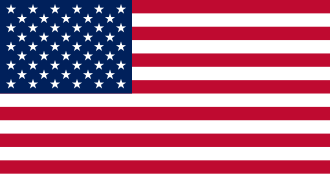
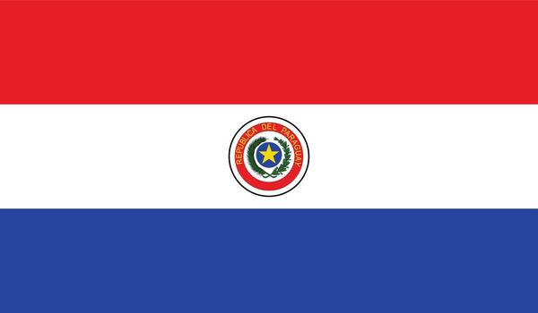
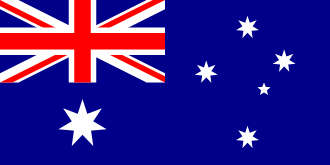

GRUPO D
El gigante de Concacaf recibe a la garra de Conmebol, la velocidad de Asia y la pasión de la UEFA.
Un grupo impredecible donde cualquiera puede clasificar.




Los partidos se disputarán en espectaculares estadios de los Estados Unidos.

SoFi Stadium
70,000 capacidad
Levi's Stadium
71,000 capacidad
BC Place
54,500 capacidad
Lumen Field
68,740 capacidadAnfitrión por segunda vez (1994, 2026). Su mejor marca fue el 3° puesto en 1930.
Regresa a la gran cita. Su mejor actuación histórica fue cuartos de final en Sudáfrica 2010.
Consolidado como el gigante de Oceanía y Asia. Clasificó de ronda en 2006 y 2022.
Tercer lugar histórico en Corea-Japón 2002. Buscan repetir aquella hazaña dorada.
Clasificado automático por ser el país organizador principal. Equipo joven y competitivo.
Logró su pase tras una dura eliminatoria sudamericana, basándose en su solidez defensiva.
Dominó la fase final de las eliminatorias asiáticas con un despliegue físico impecable.
La gran sorpresa europea de la clasificación, dejando atrás a rivales de gran peso histórico.
SoFi Stadium (California)
BC Place (Vancouver)
TURQUÍA
VS.
PARAGUAY
Levi's Stadium (California)
Lume Field (Seattle)
TURQUÍA
VS.
ESTADOS UNIDOS
SoFi Stadium (California)
Levi's Stadium (California)
Estados Unidos jugará toda la fase de grupos ante estadios completamente llenos.
Paraguay regresa a los mundiales rompiendo una racha de ausencias con una nueva generación.

Australia acostumbra a recorrer las distancias más largas del planeta para clasificar.

Turquía quiere revivir el espíritu del 2002 donde sorprendieron al mundo con su bronce.

Cuatro continentes y estilos de juego completamente distintos en una sola zona.